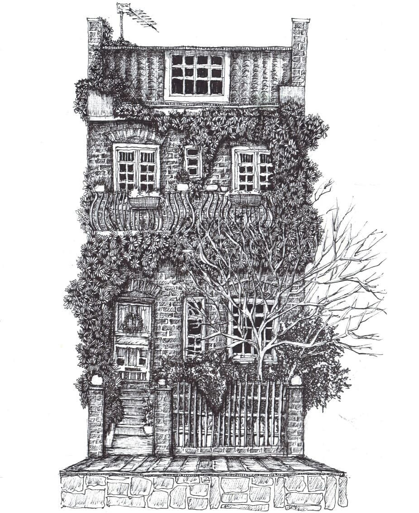
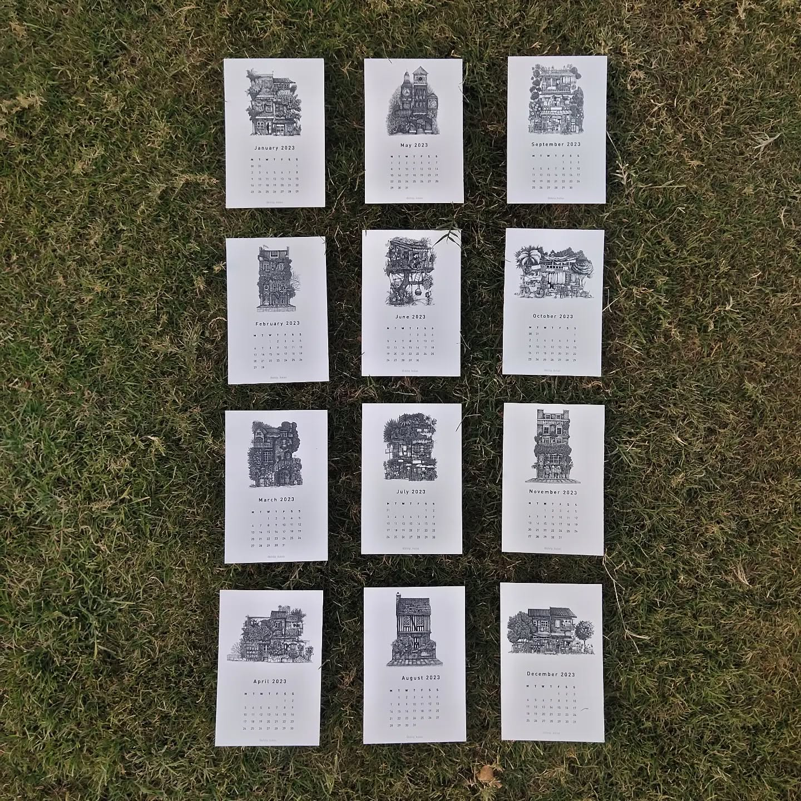
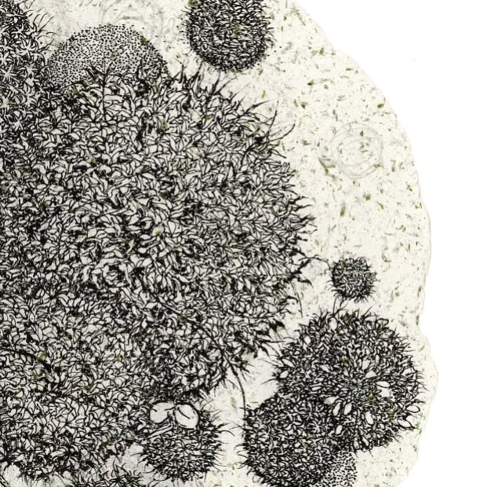

About · artist, India and London
Shubhangi Saxena
We began encounters with choosing a site. I chose to look around my surrounding environment. What did I see? landscape sites... tamed and untamed. I found strong affinity towards observing the wild patches of plant species, found in nobody's land. Mean while, I came across a podcast - Democracy of species introducing Robin Wall Kimmerer! My research and observations juxtaposed while reading the author's book - Gathering Moss. This is how I began investigating...
The moss drawings grew out of that investigation. Shilp Kalaa is the name she works under. It is printed on her 2023 desk calendar of house drawings.

The path down to the ground
2019–2020
Houses.
First, houses and shopfronts, drawn window by window and brick by brick while creepers, palms and potted plants take over the fronts. By the end of 2019 there are enough of them for a grid of nine.

2021–2022
Woods.
A few cottages in ink wash come first. Then come the woods: undergrowth, boulders and canopy, so thick with marks that the trees are left as bare white paper.

2023
A name.
The houses become a desk calendar, one for each month, wrapped in kraft paper and string, with “Shilp Kalaa” on the card. A reel shows her drawing, from pencil to “no structure”. Gardens appear, seen from above, and there is a letterpress workshop.

2024
Moss.
Pavements, brick and bark, photographed close. Gathering Moss. A storyboard called the close encounter. Paper with moss in the pulp. The City Mosses drawings. Soon the drawings themselves are down on the floor.

2025
One wall.
The City Mosses box. Two bricks on top of a boundary wall become Whispers on Bricks, shown at KaalChakra for London Design Festival. And twelve photographs from a walk, each with a line of her own.


Exhibitions
| Year | Title | Venue | City |
|---|---|---|---|
| 2025 | Whispers on Bricks, in KaalChakra (group exhibition by OSA studio, London Design Festival 2025) | Asylum Chapel | London |
Projects
| Year | Title | Form |
|---|---|---|
| 2025 | Watch Your Step! an ask of the city mosses | Box set (City Mosses) and book |
| 2024 | Encounter moss / From the soil | Installation |
| 2024 | Encounter 01: monumentalising moss by staging | Floor installation |
| 2024 | Moss paper | Handmade paper with moss, drawn on in ink |
| 2023 | Shilp Kalaa calendar | Twelve house drawings as a desk calendar |
In brief
- Artist
- Shubhangi Saxena
- Works as
- Shilp Kalaa
- Practice
- Nature artist and fine artist: pen and ink drawings of moss, small wild plants and forest floors
- Medium
- Pen and ink on paper, including paper she makes with moss in the pulp
- Subjects
- Moss in pavements and on brick walls, plants in cracks, forest floors, gardens from above, overgrown houses
- Also makes
- Floor installations with found materials, a box set and book (City Mosses), handmade paper
- From
- India
- Works in
- India and London, United Kingdom
- Shown
- KaalChakra by OSA studio, London Design Festival 2025, Asylum Chapel, London, 14–15 September 2025
- Elsewhere
- Instagram @shilp_kalaa · LinkedIn
- Enquiries
- Write to Shubhangi
Questions people ask
Who is Shubhangi Saxena?
Shubhangi Saxena is a nature artist and fine artist from India who works in India and London under the name Shilp Kalaa. She makes fine pen and ink drawings of moss, small wild plants and forest floors from close observation, and in 2025 showed Whispers on Bricks at KaalChakra, part of London Design Festival.
What is Shilp Kalaa?
Shilp Kalaa is the name Shubhangi Saxena works under. It is the name on her 2023 desk calendar of house drawings, and her Instagram handle, @shilp_kalaa.
What does she draw?
Moss and the small wild plants that grow in pavements and on walls, drawn in pen and ink from close observation and from her own photographs. Earlier work includes dense forest landscapes (2021–2022), gardens seen from above (2023) and overgrown houses (2019–2020).
How did the moss work begin?
In her own account, it began with choosing a site: she looked around her surroundings and was drawn to “the wild patches of plant species, found in nobody's land”. A podcast, Democracy of species, introduced her to the botanist Robin Wall Kimmerer, and she read Kimmerer's book Gathering Moss.
Where has her work been shown?
Whispers on Bricks was shown in KaalChakra, a group exhibition by OSA studio for London Design Festival 2025, at the Asylum Chapel in London on 14 and 15 September 2025. In 2024 she showed drawings in floor installations, one of them labelled Encounter moss / From the soil.
Does she take commissions?
She welcomes enquiries about commissioned drawings, exhibitions and collaborations. Write to her through the Write page of this site or on Instagram at @shilp_kalaa.